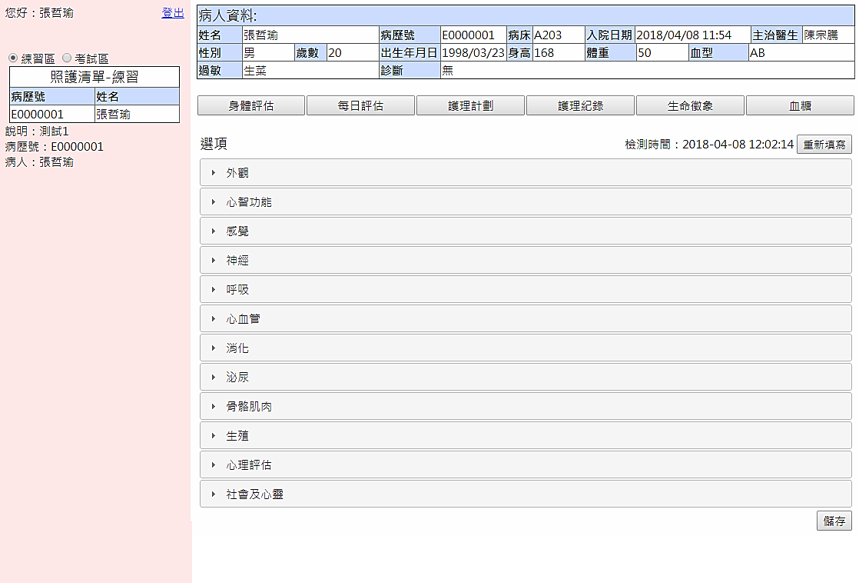
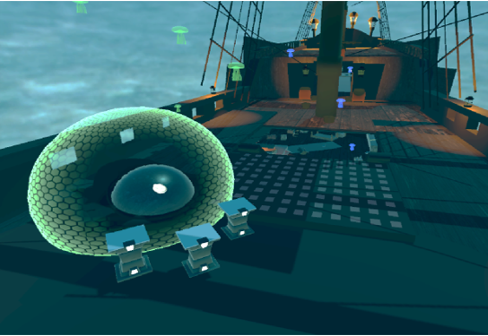

關於我
公務車申請系統
護理工作車系統
藏藍回音
海上遇險安全系統
張哲瑜
不是很會寫程式，但勇於嘗試許多事物。
我所接觸的
網頁設計
HTML
CSS
JavaScript
PHP
資料庫
MySQL
遊戲開發
Unity3D
C#
實習經歷
愛吠的狗娛樂股份有限公司
Unity3D實習生
使用Unity3D開發海上遇險安全系統
巨國資訊有限公司
網頁助理工程師
使用網頁技術開發公務車申請系統
專案成果
公務車申請系統
將紙本電子化，透過網頁提交、審核、退回申請單，以及管理車輛排程及駕駛時程。
Case Study

護理工作車系統
仿照護理工作車該有的內容，並且同時設置監控臺檢視學生使用狀況。
Case Study

藏藍回音
運用虛擬實境打造深海世界的樣貌，採第一人稱射擊玩法，擊倒變種魚解開事件的謎團。
Case Study
海上遇險安全系統
模擬船上各種緊急通訊設備，並且同時設置監控臺檢視學生使用狀況。
Case Study